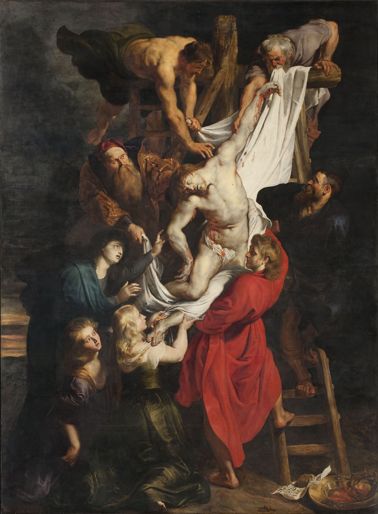
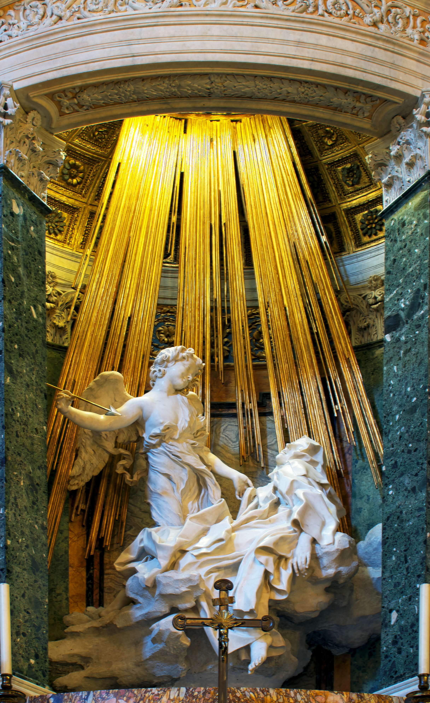
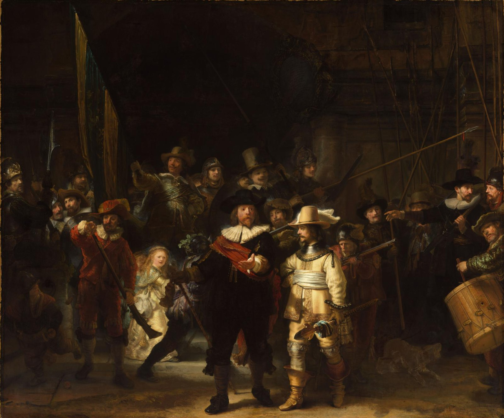
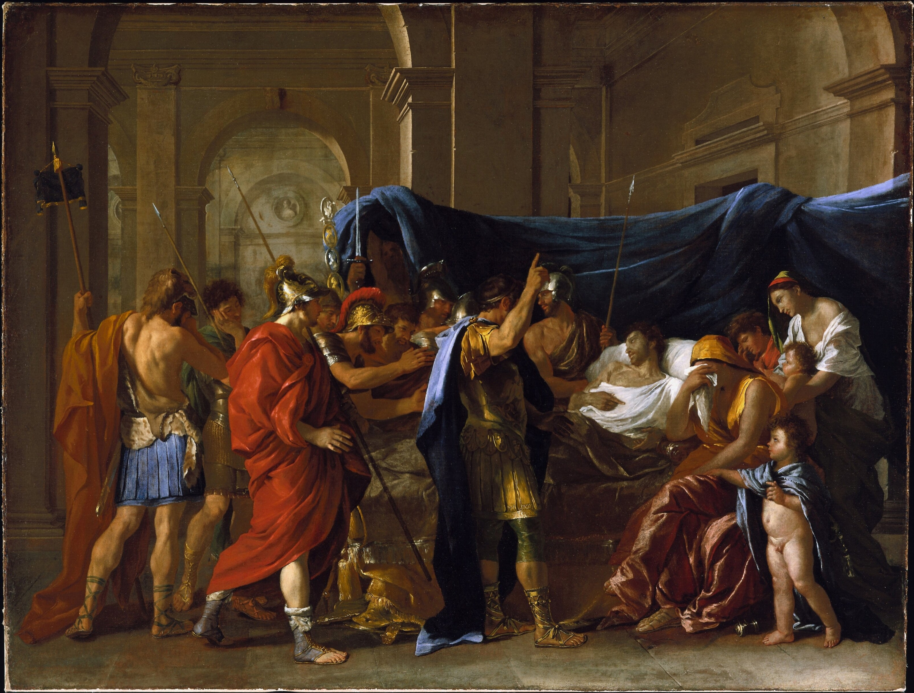
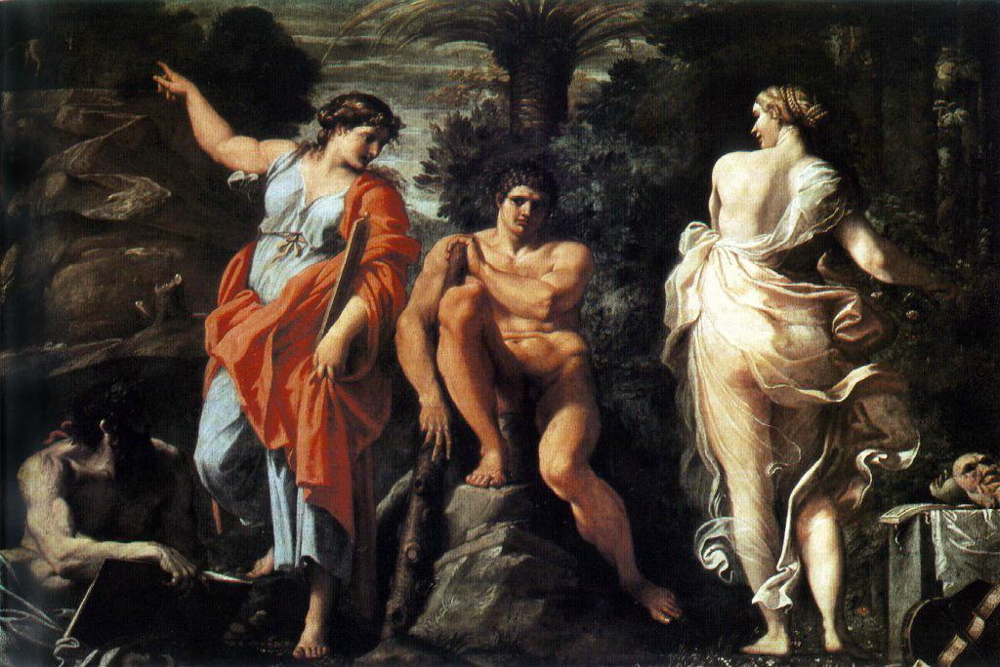
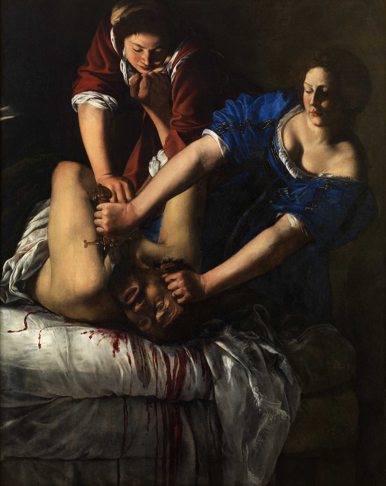
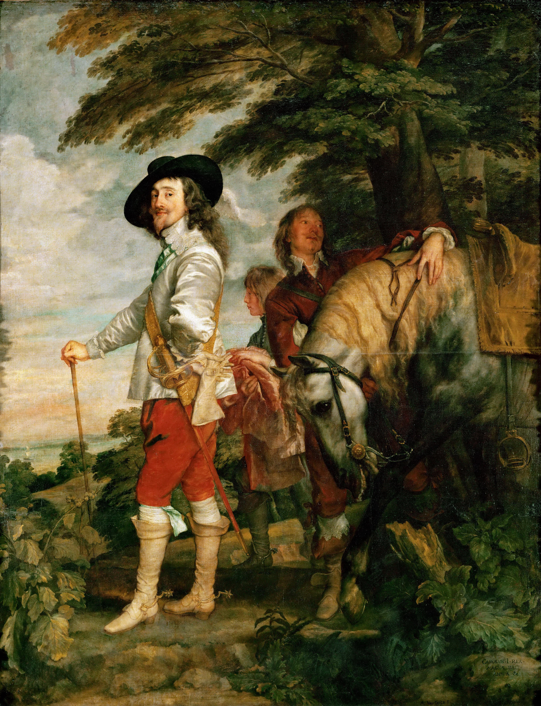
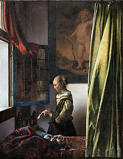
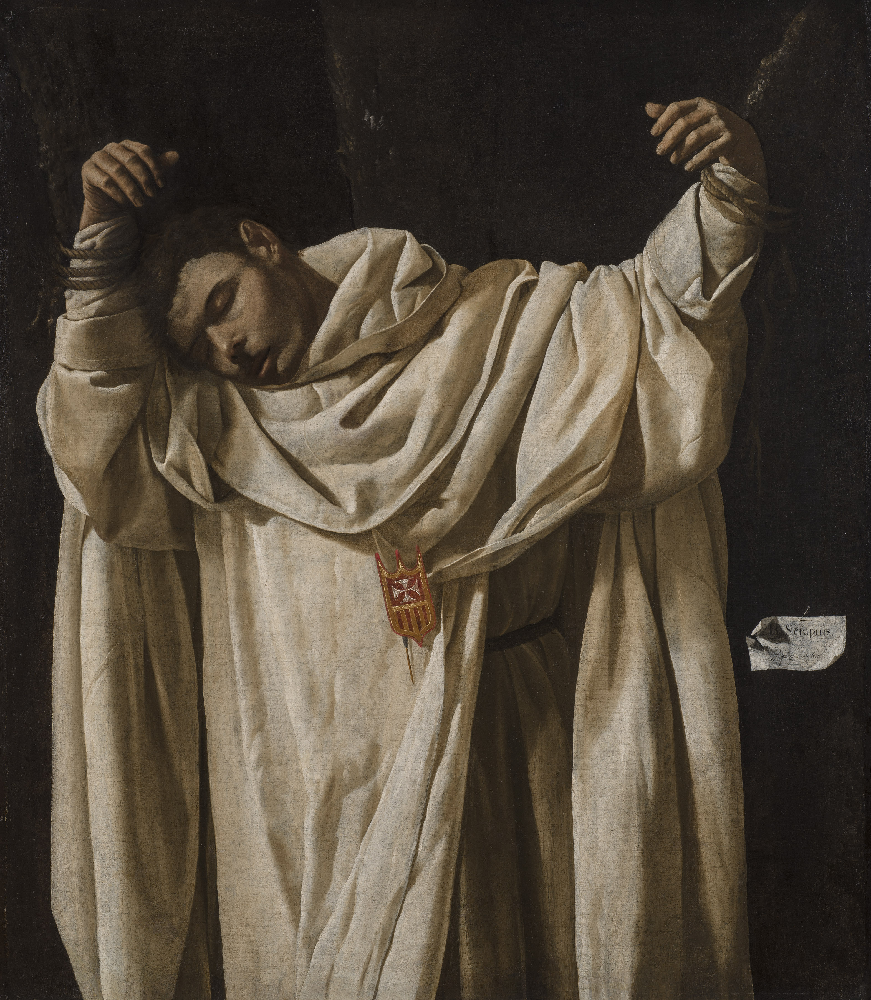

가톨릭 개혁과 감각적 설득
가톨릭 교회는 교리와 성인의 삶을 추상적 표지보다 감정적으로 가까운 경험으로 전달할 이미지를 필요로 했다. 관람자가 빛과 몸짓을 따라 사건에 참여하는 화면이 유효했다.
Baroque · c.1600–1750
바로크는 17세기의 교회, 절대군주정, 도시 시민 시장이 각기 다른 목적에 맞게 빛·움직임·물질감을 동원한 넓은 미술 범주다. 공통점은 관람자가 장면을 멀리서 읽는 대신 그 순간의 목격자처럼 느끼게 하는 설득의 방식이다.
“질서 있는 그림”에서 “지금 여기에서 벌어지는 사건”으로 — 바로크는 빛, 대각선, 몸짓과 촉각적 표면으로 믿음·권력·시민의 삶을 설득했다.
바로크는 약 1600년부터 18세기 중엽까지 유럽과 식민지 세계에서 전개된 양식의 묶음이다. 고정된 한 공식이 아니라, 관람자의 눈과 몸을 장면에 참여시키는 공통된 전략으로 이해하는 편이 정확하다. 강한 명암, 순간의 몸짓, 대각선, 실제 물질처럼 보이는 표면, 넓게 열리거나 깊이 끌어당기는 공간이 이를 돕는다.
그래서 이탈리아의 종교화와 조각, 플랑드르의 대형 제단화, 네덜란드의 시민 초상·풍속·풍경, 스페인의 신앙과 궁정화, 프랑스의 고전적 궁정 언어는 서로 다르면서도 바로크 안에서 비교할 수 있다.
바로크는 르네상스를 단순히 부정한 양식이 아니다. 매너리즘이 르네상스의 완성된 균형을 인공적으로 비틀어 보였다면, 바로크는 종교 분열과 국가 경쟁, 도시 시장의 확대 속에서 더 즉각적이고 공유 가능한 설득의 화면을 찾았다.
가톨릭 교회는 교리와 성인의 삶을 추상적 표지보다 감정적으로 가까운 경험으로 전달할 이미지를 필요로 했다. 관람자가 빛과 몸짓을 따라 사건에 참여하는 화면이 유효했다.
군주와 궁정은 승리, 왕조, 의례를 장대한 규모로 보이며 통치의 안정과 영광을 설득하려 했다. 회화·조각·건축은 하나의 무대로 결합했다.
네덜란드 공화국처럼 교회·궁정 주문이 상대적으로 약한 곳에서는 시민, 길드, 상인, 수집가가 초상·풍속·정물·풍경을 사며 일상의 빛과 물질을 새로운 주제로 만들었다.
바로크의 종교적 극성은 단지 화가들이 감정을 좋아해서 생긴 것이 아니다. 16세기 종교개혁은 서유럽의 그리스도교 세계를 갈라놓았고, 가톨릭 교회는 자신의 교리와 성상, 성인 공경, 성례가 신자에게 어떤 의미를 지니는지 더 분명하고 설득력 있게 보여 주어야 하는 상황에 놓였다.
루터와 칼뱅 계열의 개혁 운동은 교황의 권위와 교회의 여러 관행을 비판했고, 성인에게 기도하거나 성상·성유물을 공경하는 관행도 우상숭배가 될 수 있다고 문제 삼았다. 특히 일부 개신교 지역에서는 제단화와 성상을 훼손·제거하는 성상 파괴가 일어났다. 이것은 단순히 장식 취향의 다툼이 아니라, 신앙이 무엇을 통해 배우고 기억되며 공동체 안에서 체험되는가를 둘러싼 경쟁이었다.
가톨릭의 입장에서 이미지는 신 자체를 대신하는 우상이 아니라, 성서의 사건과 성인의 모범, 그리스도의 고난을 기억하고 묵상하도록 돕는 매개였다. 그러나 이미지가 탐욕, 미신, 혼란을 부를 수 있다는 비판을 무시할 수는 없었다. 따라서 교회는 이미지가 교리를 흐리거나 허황한 장식을 과시하기보다, 신앙 내용을 분명하고 품위 있게 전달해야 한다고 보았다.
1545–1563년의 트리엔트 공의회는 가톨릭 교리를 정비하는 과정에서 성상 사용을 유지했다. 동시에 성인의 이야기가 신자에게 바른 교훈을 주고, 그리스도와 성모·성인의 삶을 기억하게 해야 한다고 강조했다. 공의회가 ‘바로크식 대각선과 강한 명암’을 명령한 것은 아니지만, 명료하고 감동적이며 경건한 이미지가 필요하다는 조건을 강화했다.
예수회를 비롯한 새로운·개혁된 수도회는 설교, 교육, 선교, 영성 훈련을 통해 신앙을 일상의 판단과 감정에 연결하려 했다. 글을 읽지 못하는 신자도 많았기에, 제단화·예배당·행렬의 이미지는 성서의 사건을 보게 하고 기억하게 하는 중요한 공적 매체였다. 추상적 교리를 외우게 하는 데서 그치지 않고, 고난·자비·회심을 자신의 삶과 연결해 느끼게 하는 것이 중요했다.
그래서 바로크 종교 미술은 성인을 멀리 있는 완벽한 상징으로 두기보다, 빛을 맞고 숨 쉬며 고통받고 결단하는 몸으로 가까이 보이게 했다. 카라바조의 어두운 방을 가르는 빛, 루벤스의 무게를 가진 군상, 베르니니가 조각·건축·숨은 채광을 결합한 예배당은 관람자를 사건 밖의 평가자가 아니라 목격자·참여자로 놓는다. 강렬함은 장식이 아니라 믿음과 감정의 관계를 다시 조직하는 방법이었다.
읽는 법: 가톨릭 교회가 모든 작품에 같은 감정을 요구한 것은 아니며, 지역·수도회·주문자에 따라 절제된 묵상, 극적인 순교, 장엄한 승리의 표현이 공존했다. 또한 네덜란드처럼 개신교가 우세한 지역에서도 바로크는 시민 시장의 초상·풍속·풍경을 통해 다른 모습으로 번성했다. 즉, 종교개혁은 바로크의 한 중요한 출발 조건이지만 바로크 전체를 설명하는 유일한 원인은 아니다.
새 후원자는 기존 세력을 완전히 교체하지 않았다. 교회와 궁정도 바로크를 강하게 채택했고, 도시의 시민 시장이 새로운 규모와 장르를 보탰다. 차이는 ‘누가 주문했는가’가 화면의 기능과 기호를 어떻게 바꾸었는지에 있다.
| 후원 환경 | 주문 목적·선호 | 선호한 시각 언어 | 대표적 결과 |
|---|---|---|---|
| 이전 르네상스·매너리즘의 교황·귀족·궁정 | 고전 교양, 왕조의 위신, 교리와 의례의 질서를 지속적으로 보임 | 조화로운 비례, 복잡한 인용, 정교한 장식과 절제된 거리감 | 궁정 장식, 제단화, 신화화 |
| 가톨릭 교회와 수도회 | 신앙을 가깝고 강렬하게 체험시키고 성인의 모범을 설득 | 집중 조명, 극적인 순간, 현실적 몸과 표면, 관람자 쪽으로 열린 공간 | 카라바조의 제단화, 베르니니의 예배당 종합 |
| 절대군주와 국제 궁정 | 승리·왕조·의례를 기념하고 통치의 권위를 자연스럽게 보임 | 거대한 군상, 풍부한 직물, 대각선 운동, 건축과 연결된 장관 | 루벤스의 궁정 주문, 리고의 왕실 초상 |
| 시민·길드·상인·수집가 | 개인의 지위, 가정, 도시의 정체성, 일상의 즐거움과 자연을 소유·감상 | 근거리 빛, 순간의 표정, 촉각적 사물, 친밀한 실내와 풍경 | 렘브란트·페르메이르의 초상과 장르화 |
각 단계는 두 작품을 대비한다. ‘비판’은 반드시 직접적인 공격을 뜻하지 않으며, 다음 세대가 무엇을 다른 문제로 삼았는지를 보여 주는 형식적 전환이다.
매너리즘은 숙련된 인공성과 긴장을 강조했지만, 바로크 초기에는 성스러운 사건을 동시대 관람자의 현실 가까이 놓는 자연주의와 집중된 빛이 새로운 대안이 되었다.

길어진 몸과 얕고 모호한 공간, 차가운 색이 슬픔을 세련되고 불안한 화면 안에 붙든다.
볼 지점: 인물들이 실제 바닥보다 화면의 리듬에 의해 떠 있는 듯 보이는가.

어두운 세속적 실내로 비스듬한 빛이 들어오며 소명의 순간을 현재의 사건처럼 만든다.
볼 지점: 빛이 시선과 손짓을 따라 관람자를 장면 안으로 데려오는가.
초기의 강한 명암과 자연주의는 대형 제단화·조각·건축의 무대로 확장되었다. 확립기 바로크는 한 매체의 효과보다 관람 경험 전체를 조직한다.

흰 몸을 따라 내려오는 대각선과 여러 인물의 무게가 신앙의 비극을 집단적 동작으로 만든다.
볼 지점: 색채·육체·대각선이 한 번에 감정의 속도를 만드는가.

조각, 숨은 채광, 건축 무대가 함께 작동해 종교 체험을 관람자의 물리적 공간으로 확장한다.
볼 지점: 실제 빛과 조각의 빛이 어디에서 만나는가.
프랑스 궁정 바로크의 위계와 장관은 18세기 초 새로운 세대에게 더 친밀하고 가벼운 감정의 배경이 되었다. 로코코는 바로크의 능숙한 색과 움직임을 사교·사랑·여가의 규모로 바꾼다.
국가·지역은 분류 기준이 아니라 활동과 후원의 배경이다. 초심자 핵심은 바로크의 다섯 주요 전개를 빠르게 비교하게 하고, 중급 확장은 매체·장르·사회적 관람자의 폭을 넓힌다.
| 학습 | 미술가와 분야 | 주요 활동 국가 | 미술가 고유의 특징 | 대표 작품 |
|---|---|---|---|---|
| 초심자 핵심 | 카라바조회화 · 1571–1610 | 이탈리아 | 테네브리즘과 동시대적 자연주의 | 성 마태오의 소명 · 1599–1600 |
| 초심자 핵심 | 페테르 파울 루벤스회화 · 1577–1640 | 플랑드르·유럽 궁정 | 색채·육체·대형 군상의 에너지 | 십자가에서 내려지는 그리스도 · 1612–1614 |
| 초심자 핵심 | 렘브란트회화·판화 · 1606–1669 | 네덜란드 | 빛으로 조직한 심리와 시민 집단의 드라마 | 야경 · 1642 |
| 초심자 핵심 | 디에고 벨라스케스회화 · 1599–1660 | 스페인 | 궁정 현실과 관람자의 시선을 얽는 회화 | 시녀들 · 1656 |
| 초심자 핵심 | 니콜라 푸생회화 · 1594–1665 | 프랑스·로마 | 감정을 고전적 구성과 윤리적 서사로 통제 | 게르마니쿠스의 죽음 · 1627 |
| 중급 확장 | 잔 로렌초 베르니니조각·건축 · 1598–1680 | 이탈리아 | 조각·건축·빛을 종합한 몰입의 무대 | 성 테레사의 황홀경 · 1647–1652 |
| 중급 확장 | 안니발레 카라치회화 · 1560–1609 | 이탈리아 | 고전적 구성과 자연 관찰의 통합 | 헤라클레스의 선택 · 1596 |
| 중급 확장 | 아르테미시아 젠틸레스키회화 · 1593–1653 | 이탈리아 | 카라바조풍 명암과 행동하는 여성 주인공 | 홀로페르네스의 목을 베는 유디트 · 1612–1613 |
| 중급 확장 | 안토니 반 다이크회화 · 1599–1641 | 플랑드르·영국 | 우아한 붓질로 만든 국제 궁정 초상 | 사냥 중인 찰스 1세 · 1635 |
| 중급 확장 | 요하네스 페르메이르회화 · 1632–1675 | 네덜란드 | 시민적 실내와 광학적 빛의 고요한 긴장 | 창가에서 편지를 읽는 소녀 · 1658 |
| 중급 확장 | 프란시스코 데 수르바란회화 · 1598–1664 | 스페인 | 엄숙한 신앙과 흰 천의 물질성 | 성 세라피온 · 1628 |
| 중급 확장 | 야생트 리고회화 · 1659–1743 | 프랑스 | 왕권 표장과 직물로 만든 공식 초상 | 루이 14세의 초상 · 1701 |
국가별 양식을 화파로 부르지 않는다. 바로크에서는 특정 작업실·교육 관계가 뚜렷하고, 그 관계가 국제적인 시각 언어를 전달한 경우만 별도로 볼 수 있다.
| 화파·계보 | 중심 인물 | 공통점 | 의미 |
|---|---|---|---|
| 카라치 아카데미와 볼로냐 계보 | 루도비코·안니발레·아고스티노 카라치 | 자연 관찰, 고전 조각·르네상스의 연구, 드로잉 교육을 함께 중시 | 카라바조의 급진적 자연주의와 병행한 이탈리아 바로크의 다른 핵심 축이며, 후대 고전주의 교육에도 큰 영향을 주었다. |
| 루벤스 작업실과 국제 궁정 회화 | 페테르 파울 루벤스와 협업자·제자들 | 대형 주문의 분업, 풍부한 색채, 역동적 군상, 외교·궁정 네트워크 | 특정 국가 양식이 아니라 안트베르펜 작업실과 유럽 궁정을 잇는 생산·유통 계보로서 바로크의 국제성을 보여 준다. |
이 표는 활동 국가가 아니라 확인 가능한 교육·작업실·협업 관계를 기준으로 한다.
아래 12개 카드는 위 표와 작가·작품·학습 단계·순서가 같으며, 모두 프로젝트에 있는 로컬 이미지를 사용한다.
세속적 실내와 테네브리즘으로 종교적 사건을 관람자의 현재로 가져온 기준점이다.
빛이 손짓과 시선을 연결하며 소명의 순간을 한 번의 드라마로 조직한다.
대형 제단화에서 바로크의 색·육체·집단적 운동을 가장 선명하게 보인다.
흰 몸을 가르는 대각선과 인물들의 무게가 감정의 속도를 만든다.



바로크의 감정이 고전적 구성과 윤리적 역사화 안에서 절제될 수 있음을 보인다.
애도와 충성의 몸짓은 크지만, 화면의 질서는 흔들리지 않는다.


카라바조풍 극성을 여성 주인공의 강한 행동으로 확장한다.
어둠을 가르는 빛과 협력하는 두 인물이 즉각적인 신체적 긴장을 만든다.


시민적 실내와 빛의 질서가 바로크의 또 다른 규모를 보여 준다.
작은 실내와 창빛이 일상의 고요한 긴장을 영속적인 장면으로 만든다.


매너리즘과의 관계: 바로크는 매너리즘의 긴장과 비정상적 비례를 모두 버린 것이 아니다. 그러나 난해한 인공성을 화면 안에 붙들기보다, 관람자의 감정과 공간까지 열어 사건을 직접 설득한다.
로코코와의 관계: 로코코는 바로크의 붓질과 곡선을 계승하지만, 교회·국가의 장엄한 공적 메시지보다 사교·여가·사랑의 친밀한 정서를 선호한다.
참고 기준: 정본 학습 길잡이와 대표작 데이터는 data/art-movement-learning-guides.json, data/art-movement-representatives.json을 따르며, 이미지에는 프로젝트의 기존 로컬 파일만 사용했다.